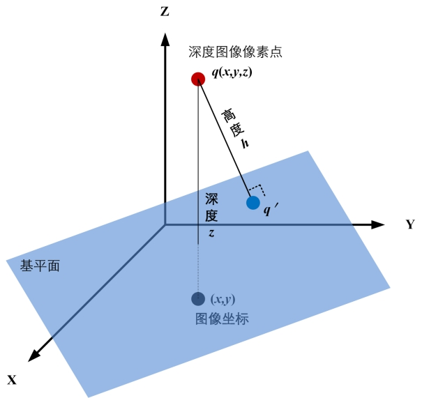
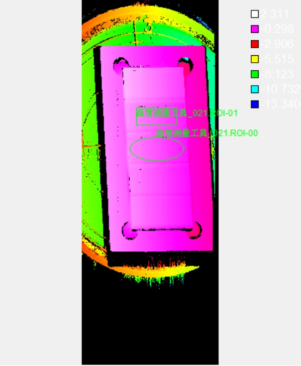
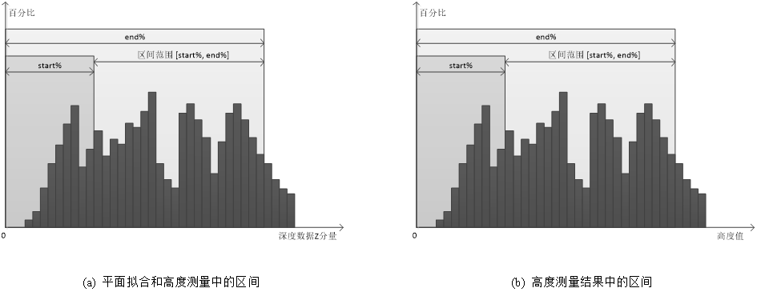

Trong đo lường 3D, công cụ đo chiều cao chủ yếu dùng để lấy khoảng cách chiều cao từ các điểm không gian ba chiều trong vùng kiểm tra của ảnh độ sâu đến mặt phẳng chuẩn chỉ định, đồng thời hoàn thành thống kê các thông tin chiều cao như giá trị nhỏ nhất, giá trị lớn nhất, giá trị trung bình, trung vị, giúp người dùng thu được phân bố khoảng cách chiều cao chính xác hơn. Chiều cao từ một điểm ba chiều（điểm pixel ảnh độ sâu）đến mặt phẳng chuẩn được thể hiện như Hình 1.

Hình 2 là sơ đồ minh họa công cụ đo chiều cao. Trong công cụ đo chiều cao, hỗ trợ thiết lập nhiều vùng đo, đồng thời có thể cấu hình hình dạng và đặc trưng của vùng đo chiều cao. Như Hình 2, tổng cộng có hai vùng đo, hình dạng của hai vùng này lần lượt là hình chữ nhật, hình elip, đồng thời có thể đo các điểm đặc trưng（như giá trị trung bình, trung vị, v.v.）trong hai vùng này hoặc thông tin thống kê của giá trị chiều cao từ toàn bộ dữ liệu đến mặt phẳng chuẩn.

| Phân loại | Tên tham số | Mô tả tham số |
|---|---|---|
| Cửa sổ thuộc tính | Số lượng ROI | Tham số này dùng để chỉ định số lượng vùng đo, hỗ trợ tối đa 100 ROI. |
| Chỉ mục ROI | Tham số này dùng để chọn vùng đo thứ i và thiết lập tham số cho vùng đó. | |
| Loại ROI | Vùng cần đo, chia thành 7 loại：toàn bộ ảnh, hình chữ nhật, hình chữ nhật affine, hình tròn, hình vành khuyên, hình elip, đa giác. | |
| Tính toán đảo dấu | Khi chọn “Có”, dấu của giá trị tính chiều cao sẽ bị đảo ngược, chủ yếu áp dụng cho các trường hợp như rãnh, độ dày, trong đó chiều cao tính xuống dưới là dương. | |
| Đặc trưng điểm đo | Chọn một loại điểm đặc trưng trong vùng ROI để đo chiều cao, chia thành 6 loại：giá trị trung bình, trung vị, tâm khối, Z lớn nhất, Z nhỏ nhất, toàn bộ dữ liệu. | |
| Giới hạn trên, dưới của khoảng | Dữ liệu độ sâu của vùng đo được sắp xếp theo thành phần Z từ nhỏ đến lớn, sau đó lấy các điểm đặc trưng như giá trị trung bình, trung vị của dữ liệu độ sâu nằm trong khoảng start% ~ end%. Phạm vi giá trị là giới hạn dưới [0,100)，giới hạn trên (0,100]，và giới hạn dưới nhỏ hơn giới hạn trên. |
|
| Giới hạn trên, dưới của khoảng kết quả | Giá trị chiều cao của kết quả đo được sắp xếp từ nhỏ đến lớn, sau đó lấy các điểm đặc trưng như giá trị trung bình, trung vị của giá trị chiều cao nằm trong khoảng start% ~ end%. Phạm vi giá trị là giới hạn dưới [0,100)，giới hạn trên (0,100]，và giới hạn dưới nhỏ hơn giới hạn trên. | |
| Giới hạn trên, dưới của khoảng kết quả thống kê | Kết quả chiều cao đo được của tất cả vùng ROI được sắp xếp từ nhỏ đến lớn, sau đó lấy các điểm đặc trưng như giá trị trung bình, trung vị của giá trị chiều cao nằm trong khoảng start% ~ end%, dùng cho đầu ra thống kê của kết quả đo tổng thể. Phạm vi giá trị là giới hạn dưới [0,100)，giới hạn trên (0,100]，và giới hạn dưới nhỏ hơn giới hạn trên. | |
| Bù hệ số | Bù hệ số cho kết quả đo, thông thường là 1, dùng để bù sai số hệ thống như tạo ảnh. | |
| Bù cố định | Bù cố định cho kết quả đo, thông thường là 0, dùng để bù sai số hệ thống như tạo ảnh. | |
| Giới hạn trên giá trị chiều cao lớn nhất | Phạm vi giá trị là [-100, 100]，và giới hạn dưới phải nhỏ hơn hoặc bằng giới hạn trên. | |
| Giới hạn dưới giá trị chiều cao lớn nhất | Phạm vi giá trị là [-100, 100]，và giới hạn dưới phải nhỏ hơn hoặc bằng giới hạn trên. | |
| Giới hạn trên giá trị chiều cao nhỏ nhất | Phạm vi giá trị là [-100, 100]，và giới hạn dưới phải nhỏ hơn hoặc bằng giới hạn trên. | |
| Giới hạn dưới giá trị chiều cao nhỏ nhất | Phạm vi giá trị là [-100, 100]，và giới hạn dưới phải nhỏ hơn hoặc bằng giới hạn trên. | |
| Giới hạn trên giá trị chiều cao trung bình | Phạm vi giá trị là [-100, 100]，và giới hạn dưới phải nhỏ hơn hoặc bằng giới hạn trên. | |
| Giới hạn dưới giá trị chiều cao trung bình | Phạm vi giá trị là [-100, 100]，và giới hạn dưới phải nhỏ hơn hoặc bằng giới hạn trên. | |
| Giới hạn trên giá trị trung vị chiều cao | Phạm vi giá trị là [-100, 100]，và giới hạn dưới phải nhỏ hơn hoặc bằng giới hạn trên. | |
| Giới hạn dưới giá trị trung vị chiều cao | Phạm vi giá trị là [-100, 100]，và giới hạn dưới phải nhỏ hơn hoặc bằng giới hạn trên. | |
| Giới hạn trên giá trị chiều cao lớn nhất thống kê | Phạm vi giá trị là [-100, 100]，và giới hạn dưới phải nhỏ hơn hoặc bằng giới hạn trên. | |
| Giới hạn dưới giá trị chiều cao lớn nhất thống kê | Phạm vi giá trị là [-100, 100]，và giới hạn dưới phải nhỏ hơn hoặc bằng giới hạn trên. | |
| Giới hạn trên giá trị chiều cao nhỏ nhất thống kê | Phạm vi giá trị là [-100, 100]，và giới hạn dưới phải nhỏ hơn hoặc bằng giới hạn trên. | |
| Giới hạn dưới giá trị chiều cao nhỏ nhất thống kê | Phạm vi giá trị là [-100, 100]，và giới hạn dưới phải nhỏ hơn hoặc bằng giới hạn trên. | |
| Giới hạn trên giá trị chiều cao trung bình thống kê | Phạm vi giá trị là [-100, 100]，và giới hạn dưới phải nhỏ hơn hoặc bằng giới hạn trên. | |
| Giới hạn dưới giá trị chiều cao trung bình thống kê | Phạm vi giá trị là [-100, 100]，và giới hạn dưới phải nhỏ hơn hoặc bằng giới hạn trên. | |
| Giới hạn trên giá trị trung vị chiều cao thống kê | Phạm vi giá trị là [-100, 100]，và giới hạn dưới phải nhỏ hơn hoặc bằng giới hạn trên. | |
| Giới hạn dưới giá trị trung vị chiều cao thống kê | Phạm vi giá trị là [-100, 100]，và giới hạn dưới phải nhỏ hơn hoặc bằng giới hạn trên. | |
| Cửa sổ ảnh | Ảnh độ sâu | Hiển thị ảnh độ sâu cần kiểm tra, hiển thị dưới dạng ảnh giả màu. |
| Vùng đo | Hiển thị vùng cần đo trên ảnh. | |
| Chuỗi dữ liệu | Ảnh độ sâu | Nhập ảnh độ sâu cần kiểm tra. |
| Mặt phẳng chuẩn | Mặt phẳng chuẩn được sử dụng trong đo chiều cao. | |
| Biến đổi tuyến tính hai chiều | Biến đổi tịnh tiến, xoay, co giãn của mục tiêu so với template. | |
| Giao diện nâng cao | Không có | Không có |
| Phân loại | Tên tham số | Mô tả tham số |
|---|---|---|
| Cửa sổ giám sát | Ảnh độ sâu | Chiều dài, chiều rộng và kích thước pixel của ảnh độ sâu, cũng như tham số dữ liệu độ sâu. |
| Kết quả đo chiều cao | Hiển thị kết quả đo chiều cao của từng vùng đo, bao gồm giá trị chiều cao lớn nhất, nhỏ nhất, trung bình, trung vị trong từng vùng đo, cũng như kết quả thống kê của kết quả đo trong tất cả vùng đo. | |
| Kết quả thực thi | Kết quả thực thi công cụ. | |
| Thời gian thực thi | Thời gian thực thi công cụ. | |
| Cửa sổ ảnh | Ảnh độ sâu | Hiển thị ảnh độ sâu đã kiểm tra, hiển thị dưới dạng ảnh giả màu. |
| Chuỗi dữ liệu | Giống tham số cửa sổ giám sát, dùng cho các công cụ tiếp theo. |
Giả sử phạm vi khoảng là [start%, end%]，thì chỉ dữ liệu nằm trong phạm vi khoảng mới là hợp lệ；như Hình 3(a), khi cấu hình tham số cho vùng đo, dữ liệu độ sâu trong vùng được sắp xếp theo thành phần Z từ nhỏ đến lớn, sau đó lấy các điểm đặc trưng như giá trị trung bình, trung vị của dữ liệu độ sâu nằm trong khoảng start% ~ end%；như Hình 3(b), trong kết quả đo chiều cao, giá trị chiều cao được sắp xếp từ nhỏ đến lớn, sau đó lấy giá trị trung bình, trung vị, v.v. của giá trị chiều cao nằm trong khoảng start% ~ end%.

Step 1 Thiết lập tham số của vùng đo
Chủ yếu cần thiết lập số lượng vùng đo, hình dạng, loại điểm đặc trưng trong vùng và phạm vi khoảng. Trong đó, người dùng có thể tự chỉ định số lượng vùng đo；hình dạng vùng đo chia thành 7 loại：toàn bộ ảnh, hình chữ nhật, hình chữ nhật affine, hình tròn, hình vành khuyên, hình elip, đa giác；loại điểm đặc trưng trong vùng đo chia thành 6 loại：giá trị trung bình, trung vị, tâm khối, Z lớn nhất, Z nhỏ nhất, toàn bộ dữ liệu.
Step 2 Thiết lập tham số kết quả đo chiều cao
Tiếp theo cần thiết lập tham số cho kết quả đo chiều cao của từng vùng đo. Tham số cần thiết lập gồm：phạm vi khoảng. Người dùng có thể thiết lập các tham số này theo nhu cầu thực tế của dự án.
Step 3 Thực hiện đo chiều cao và xuất kết quả
Sau các bước trên, có thể thực hiện đo chiều cao. Kết quả đầu ra của đo chiều cao chủ yếu bao gồm：giá trị đặc trưng chiều cao trong từng vùng đo（giá trị lớn nhất, giá trị nhỏ nhất, giá trị trung bình, trung vị）và kết quả thống kê của giá trị đặc trưng chiều cao trong tất cả vùng đo.
Step 4 Bù và phán định kết quả
Nếu cần bù hoặc phán định kết quả tính toán, có thể thiết lập bù hệ số, bù cố định, căn cứ phán định, giá trị lớn nhất, giá trị nhỏ nhất.
Tham khảo “\Samples\3D\深度图\3D测量工具.gvp”。